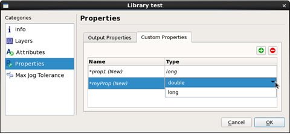
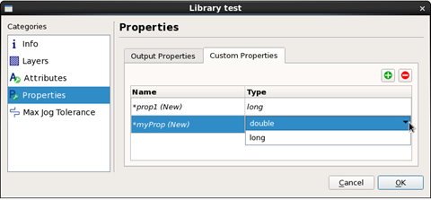

Adding Custom and Output Properties and to a Library
You can add properties to a library using the Calibre Pattern Matching GUI. There are two types of properties: custom properties and output properties. All properties are automatically attached to the output markers for a matched result during a pattern matching run.
Property Type |
Description |
|---|---|
Custom property |
A unique value can be assigned in each pattern. All patterns must have the same set of custom properties, but the value is assigned per pattern. |
Output property |
The output properties match_orient, match_rotation, and match_type are added at the library level, and the value is assigned by the tool when a pattern match is made. |
For a general discussion of properties, see “Properties”.
Prerequisites
A pattern library is open in the Calibre Pattern Matching GUI. See “Invoking the Calibre Pattern Matching GUI”.
Procedure
- (Optional)
Click the Custom Properties tab to add custom
properties.
Click the
 button
to add a property. Click in the property name to change it. Select
the property type with the dropdown list. Figure 1. Adding Properties to a Library
button
to add a property. Click in the property name to change it. Select
the property type with the dropdown list. Figure 1. Adding Properties to a LibraryThis step adds the custom property to all patterns in the library without an assigned value.